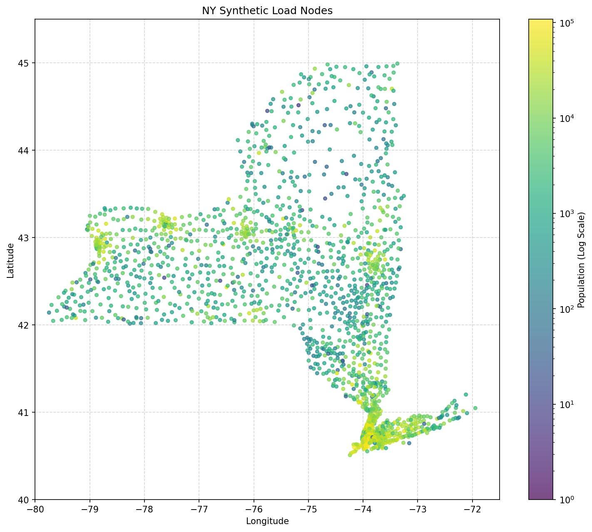
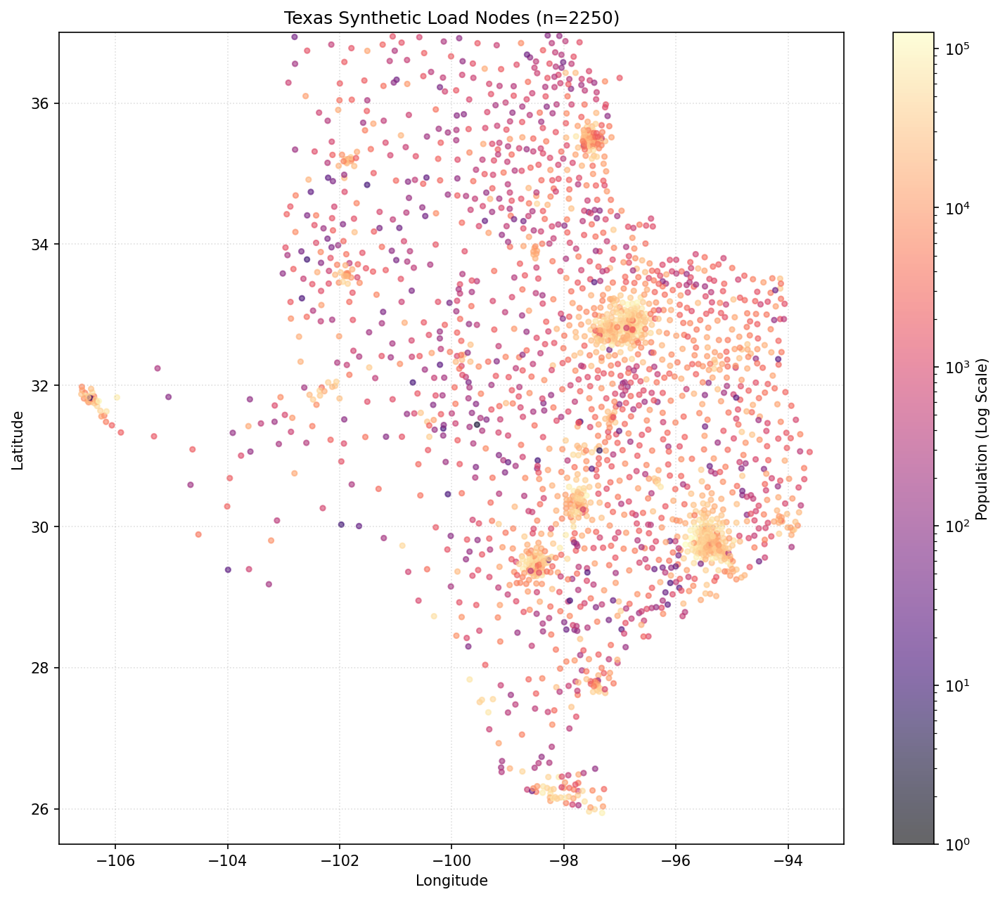
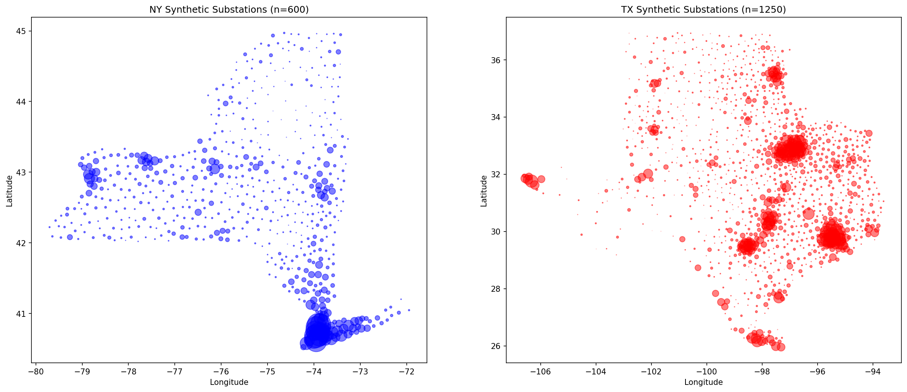
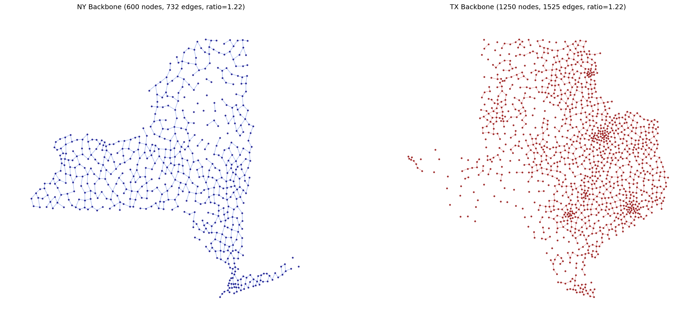
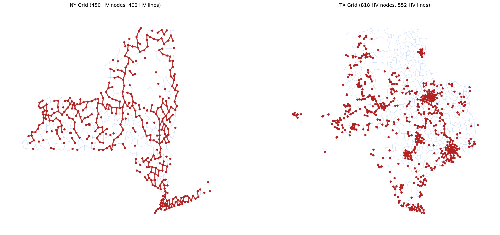

🔌 Dartboard Pipeline - Synthetic Grid Topology Generator
📊 Pipeline Execution Summary
- Total Runtime: 30.0 seconds
- Phases Completed: 7 phases
- Data Sources: NY ISO Gold Book, US Census ZCTA, EIA-860
- Generated Networks: New York & Texas synthetic grids
- Status: ✅ Successfully Completed
Phase 1 & 2: Load Node Generation
Created load nodes from US Census ZCTA (ZIP Code Tabulation Area) population data.
New York Load Nodes

- Load nodes created: 1,793
- Data source: Census ACS API + ZCTA gazetteer
- Bounds: 40.0°-45.5°N, 80.0°-71.0°W
Texas Load Nodes

- Load nodes created: 2,250
- Data source: Census ACS API + ZCTA gazetteer
- Bounds: 25.5°-37.0°N, 107.0°-93.0°W
Phase 3: Substation Clustering
Used agglomerative clustering to group load nodes into realistic substation locations.

- NY substations: 600 (clustered from 1,793 load nodes)
- TX substations: 1,250 (clustered from 2,250 load nodes)
- Algorithm: Agglomerative clustering with geographic constraints
Phase 4 & 5: Topology Generation & Pruning
Generated initial mesh topology using Delaunay triangulation, then pruned using Birchfield RNG method.

- NY: 600 nodes, 732 lines (ratio: 1.22)
- TX: 1,250 nodes, 1,525 lines (ratio: 1.22)
- Method: RNG filtering + ratio-based pruning to realistic line/node ratios
Phase 6 & 7: Generator Integration & Voltage Assignment
Integrated EIA-860 generator data and assigned 115kV/345kV voltage levels based on generation and load.

- NY generators from Gold Book: 672 generators (43,507 MW)
- EIA generators integrated: 1,388 NY, 1,628 TX
- Final NY grid: 660 nodes, 792 lines
- Final TX grid: 1,668 nodes, 1,943 lines
- 345kV backbone: Created for high-capacity transmission
🎯 Key Features Demonstrated
- ✅ Gold Book Extraction: Parsed NY ISO PDF for generator data
- ✅ Census Integration: Real population-based load placement
- ✅ Realistic Clustering: Geographic substation aggregation
- ✅ Birchfield Methodology: RNG-based topology pruning
- ✅ EIA Integration: Real generator locations and capacities
- ✅ Multi-voltage Design: 115kV distribution + 345kV transmission
- ✅ Automated Visualization: High-quality maps for analysis
Pipeline output saved to: /Users/emmettsouder/Desktop/IW/version1/output/